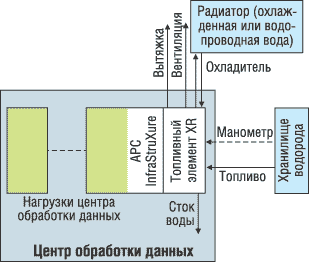

Современные тенденции развития бизнеса вызвали существенное повышение требований к готовности сложных корпоративных систем. Часто само выживание компании может зависеть от того, удалось ли ей как можно больше сократить внеплановые простои. Как известно, основная идея готовности состоит в том, что пользователи системы должны быть в состоянии работать со своими приложениями и получать требуемые результаты в разумные сроки. При построении систем высокой готовности необходимо обеспечить баланс между отдачей и имеющимися у клиента ресурсами. Кроме того, особое внимание уделяется увеличению времени безотказной работы (Mean Time Between Failures, MTBF) и, что еще более важно, минимизации среднего времени восстановления (Mean Time To Recovery, MTTR).
Прежде компаниям-разработчикам при создании информационных систем приходилось проектировать инфраструктуру и закупать все составные части у разных фирм-производителей. В таких случаях, пытаясь предсказать устойчивость оборудования к отказам, руководители центров данных и инженерных служб часто склонны переоценивать риски и закладывать в расчет слишком большой запас надежности, что выливается в излишние расходы и превышение бюджета. Если же не удается верно оценить потребности систем в развитии, то это грозит неудовлетворенностью пользователей, простоями оборудования и снижением роста доходности.
Корпорация APC (http://www.apc.com) предложила свое решение этой проблемы. Теперь все вопросы, связанные с прокладкой кабельных систем, охлаждением компьютерного оборудования в шкафах и обеспечением техники бесперебойным электропитанием, компания взяла на себя.
| Одной из первых технологию InfraStruXure применила корпорация Microsoft, оснастив ею свой Technology Center. |
Уровни готовности инфраструктуры ответственных сетей
APC разработала интегрированную архитектуру физической инфраструктуры ответственных сетей (Network Critical Physical Infrastructure, NCPI). Распространив модульный подход к построению систем за рамки сферы электропитания, она объединила шкафы для установки оборудования, средства кондиционирования, электропитания, управления и сервисного обслуживания (основные составляющие NCPI) в открытое адаптивное интегрированное решение. Как известно, еще в 2002 г. корпорация предложила подход к реализации NCPI на основе архитектуры PowerStruXure, упрощающий построение инфраструктуры электропитания за счет использования готовых модульных "строительных блоков", включающих средства электропитания и управления.
Этот принципиально новый способ технической поддержки компьютерных центров, предлагающий заказчику профессионально спроектированную и протестированную систему, упрощает планирование, построение и администрирование инфраструктуры любого центра обработки данных. Архитектура PowerStruXure позволяет приобретать и устанавливать элементы расширения по мере необходимости, по принципу конструктора, что сокращает бремя капитальных вложений, необходимых на начальной стадии любого информационно-технологического проекта.
PowerStruXure легко адаптируется к разнообразным условиям и требованиям центров данных по уровню готовности. Например, конфигурация класса 1 (резервирование N + 1) обеспечивает статистическую готовность более 99,99% и строится на основе единого силового ввода. Избыточность N + 1 достигается за счет построения внутреннего массива на основе ИБП APC. Питание от одного источника подается в каждую отдельную стойку.
Конфигурация класса 2 (резервирование N + 1 с внешней избыточностью) гарантирует статистическую готовность более 99,999%. В этой конфигурации используются два силовых ввода (A + B), причем ввод A обеспечивает питание для резервируемого ИБП (N + 1), а ввод B обеспечивает кондиционирование питания на стороне B. Энергия от обоих источников подается в каждую стойку. Если в стойке расположены устройства с одним шнуром питания, то специальный переключатель (уровня стойки) выберет для использования лучший из источников.
В конфигурации класса 3 (резервирование N + 1 с матрицированной избыточностью) обеспечивается просто невиданное значение статистической готовности - более 99,99999% (!). Здесь также используются два силовых ввода (A + B), а матрицированная избыточность достигается за счет подачи питания от двух источников (A + B) на два ИБП с резервированием N + 1. В этом случае на каждую стойку питание подается от двух отдельных источников. Если в стойке расположены устройства с одним шнуром питания, то переключатель выберет лучший из источников.
На предложенный APC подход перешло более сотни компаний из списка Fortune 1000. Специальные издания по вопросам технологий компьютерных, электрических и телефонных сетей многих стран отметили его как новаторское и перспективное решение. Опираясь на приобретенный позитивный опыт, APC начала развивать следующее поколение PowerStruXure - архитектуру InfraStruXure, которая позволяет сетевым администраторам строить решения по специальному заказу на основе широкого набора стандартных компонентов. При таком подходе сохраняется надежность, доступность по цене и предсказуемость стандартных решений; в то же время он обеспечивает полный учет особых потребностей заказчика. Кроме того, InfraStruXure дает возможность наращивать конфигурацию строго по мере необходимости, избавляя заказчика от неоправданных расходов.
Архитектура InfraStruXure
APC InfraStruXure представляет собой интегрированную архитектуру электропитания и кондиционирования, оптимизированную для размещения оборудования в стойках. Решение компании APC, объединяющее средства защиты электропитания, прецизионного кондиционирования, управления и сервисного обслуживания, обеспечивает системный подход к построению инфраструктуры центров обработки данных. Его применение позволяет сократить расходы, связанные с созданием и эксплуатацией систем кондиционирования и защиты электропитания, за счет ряда преимуществ, а именно:
- InfraStruXure помогает избежать ошибок на этапе проектирования;
- процесс инсталляции системы максимально прост и не требует существенных затрат времени;
- возможно поэтапное внедрение архитектуры по мере роста потребностей;
- гарантируется совместимость всех компонентов архитектуры, простота эксплуатации, контроля и обслуживания, а также высочайший уровень готовности всей системы.
Компания АРС разработала три варианта архитектуры InfraStruXure: типы A, B и C.
Тип А - архитектура для защиты небольших информационных центров. Мощность системы - до 12 кВ.А; однофазное подключение нагрузки; до 12 модулей для размещения нагрузки. Бесперебойное электропитание обеспечивается с помощью ИБП Smart-UPS RT и Symmetra RM.
Тип B - архитектура для защиты средних информационных центров. Мощность системы - до 80 кВ.А, одно- и трехфазное подключение нагрузки, до 84 модулей для размещения нагрузки. Для обеспечения бесперебойного электропитания используется ИБП Symmetra PX мощностью 40 или 80 кВт.
Тип С - архитектура для защиты больших информационных центров. Мощность системы - более 160 кВ.А, одно- и трехфазное подключение нагрузки, количество модулей для размещения нагрузки не ограничено. Бесперебойное электропитание обеспечивается с помощью ИБП Symmetra MW мощностью 1 МВт, реализующего специальную технологию on-line с дельта-преобразованием.
Дополнительные возможности архитектуры InfraStruXure
|
Элементы готовности InfraStruXure
Таким образом, APC InfraStruXure - это всеобъемлющая стратегия построения компьютерного центра, включающая такие элементы, как непрерывность электропитания, его распределение, защищенная среда и интегрированные средства управления. Выбор надежного источника бесперебойного питания - один из первых стратегических шагов для обеспечения готовности систем компании. В решение APC входят следующие составляющие: широкий спектр ИБП - от одиночных устройств мощностью 300 В.А до параллельных систем с резервированием мощностью 1 МВт; ПО для корректного завершения работы приложений и серверов, позволяющее максимально сократить потери и время повторного запуска систем; возможность управления ИБП по сети.
Мощные средства распределения электропитания позволяют свести к минимуму простои из-за ошибок оператора. APC предлагает следующие решения:
- распределительные блоки для установки в стойку, включающие встроенные средства измерения тока и сигнализации;
- розетки с индивидуальным дистанционным управлением, позволяющие включать, перезагружать и отключать устройства в заданной последовательности;
- автоматические переключатели нагрузки, обеспечивающие резервирование электропитания подключенного оборудования.
Современные ИТ-системы чрезвычайно чувствительны к состоянию окружающей среды. В стойке, заполненной серверами и другим оборудованием, выделяется огромное количество тепла, что создает опасность повреждения данных. Для решения такого рода проблем APC предлагает:
- широкий спектр стоек для оборудования компьютерных центров и коммутационных зон (высотой 13U, 25U, 40U, 42U и 47U); стойки совместимы с оборудованием различных производителей и имеют гарантию соответствия;
- различные аксессуары, в том числе переключатели клавиатуры/монитора/мыши, распределительные устройства для стоек, ЖК-мониторы, приспособления для прокладки кабелей и многое другое;
- средства управления температурным режимом для сред с высокой плотностью мощности (от 3 до 5 кВт и более для стойки высотой 42U);
- системы контроля параметров окружающей среды и предупреждения при появлении огня, дыма, воды и т. д.;
- средства обеспечения безопасности с использованием датчиков открывания дверей, видеокамер и датчиков движения.
Интеллектуальные устройства и ПО сетевого управления значительно сокращают время восстановления MTTR благодаря средствам визуализации и обработки исключительных ситуаций. Величина MTTR включает время, необходимое для локализации неисправности в рамках всей инфраструктуры электропитания и быстрого ее устранения. Авария может произойти в любом месте - от ввода электросети в здание до каждого из отдельных устройств. Подход APC помогает избежать многих проблем, а в случае неизбежных сбоев - быстро получить сообщение о возникшей неисправности и ее точном местоположении.
Корпорация обеспечивает также высокий уровень совместимости и интеграции. Под этим подразумевается:
- широкий спектр масштабируемых решений (от индивидуальных устройств до систем, охватывающих все предприятие);
- поддержка любых платформ управления SNMP;
- возможность управления с помощью браузера, протокола Telnet или SNMP;
- обработка исключительных ситуаций с оповещением по электронной почте, пейджеру, протоколам SNMP и SYSLOG;
- сетевые средства установки и обслуживания.
Соединяя вместе все эти элементы, можно построить интегрированную инфраструктуру в соответствии с конкретными требованиями компании, причем ее можно будет масштабировать при изменении условий бизнеса.
InfraStruXure на рынке СНГВ прошлом году московское представительство APC сумело вывести СНГ на первое место в регионе EMEA по продажам InfraStruXure. Поставки решений InfraStruXure в регионе в прошлом году выросли в восемь раз, в то время как для других тяжелых продуктов (Symmetra, Silcon) этот показатель составил порядка 60%, а для устройств серий BackUPS и SmartUPS - 25%. Всего в минувшем году в России и СНГ было продано свыше 1200 систем InfraStruXure Type A, более 100 систем InfraStruXure Type B, а также выполнено три проекта на основе InfraStruXure Type C. В настоящее время главный акцент в деятельности представительства делается на сбалансированном многофокусном развитии традиционных продуктов и новых решений. Кроме того, большое внимание уделяется увеличению доли решений InfraStruXure в корпоративных проектах.
|
Решения на базе InfraStruXure
Как уже отмечалось, АРС предлагает три типа систем на базе архитектуры InfraStruXure, каждая из которых оснащена инструментом управления Enterprise Manager. Пример такой системы приведен на рис. 1. Первый тип (А) предназначен для обслуживания небольших информационных систем с числом стоек 1-3 или 3-10. В первом случае в качестве системы резервного питания применяются обычные ИБП Smart-UPS RM, которые укладываются в нижней части шкафа, а во втором - более мощное решение Symmetra RM. Стандартный шкаф для 1-3 стоек содержит блок распределения питания (PDU), монтируемый в стойку, блок мониторинга состояния внутренней среды, желоба для кабелей питания и передачи данных, а также карту сетевого управления. Для рекомбинации холодного воздуха служит блок откачки воздуха с продуманной системой воздушных патрубков. Кроме того, в системе имеются достаточно удобные кабельные лестницы, дающие возможность развести кабели по местам комплекса, не преграждая потоков воздуха.
| Рис. 1. Пример системы InfraStruXure. |
В резервно-контрольном блоке InfraStruXure Type A для 3-10 стоек используется более сложная система рекомбинации холодных потоков воздуха на базе кондиционера NetworkAIR PA, способного поддерживать стабильную внутреннюю температуру даже при достаточно сильных колебаниях внешней. Управление системой контроля ведется при помощи карты сетевого управления, которая комплектуется управляющим ПО.
Второй тип систем InfraStruXure (Type В) предназначен для более сложных информационных систем с количеством стоек от 10 до 100. Если систему на базе InfraStruXure Type A можно собрать самостоятельно, с учетом индивидуальных требований пользовательской группы, то для подготовки работы InfraStruXure Type В обязательно должны быть приглашены специалисты компании-интегратора. Это связано с тем, что система достаточно сложна и имеет ряд функций, настройка которых под силу только профессионалам.
Как и в предыдущем случае, тип В архитектуры InfraStruXure содержит в себе два подтипа, ориентированных на число стоек от 10 до 60 и от 60 до 100.
В первом варианте используются ИБП типа Symmetra RM, уже давно ставшие базовым решением для многих корпоративных ИС. В этом случае мощность системы можно наращивать путем простой установки дополнительных модулей ИБП представленного типа. За распределение энергопотоков электрической системы данного решения отвечает блок распределения питания (PDU) мощностью 40 кВт. Кроме того, система содержит стандартные стоечные шкафы NetShelter VX (рис. 2), в комплект которых входит блок мониторинга состояния среды, желоба для кабелей питания и передачи данных, а также кабельные лестницы.
 | Рис. 2. Шкаф NetShelter. |
Система поддержания внутренней температуры представляет особый интерес, так как базируется на кондиционере NetworkAIR FM и блоке откачки воздуха со сложной системой патрубков одновременно. Это повышает надежность системы не только за счет дублирования функций, но и благодаря их эффективному комбинированию.
Комплекс InfraStruXure Type В, рассчитанный на обслуживание 60-100 стоек, - еще более сложное решение. Вместо массива электропитания Symmetra PX 40 кВт в нем задействован комплекс с мощностью 80 кВт. Им управляет несколько блоков распределения питания (PDU) мощностью 80 кВт. Важный элемент системы InfraStruXure Type В - наличие удаленного распределительного щита.
Система поддержания микроклимата в InfraStruXure Type В (60-100) аналогична предыдущему комплексу, за исключением того, что составных частей и дублирующих друг друга комплексов в ней в два раза больше. Структурная особенность системы охлаждения данного комплекса состоит в том, что система воздушных каналов в нем проложена под покрытием пола серверной комнаты. Холодный воздух при помощи кондиционера NetworkAIR FM закачивается в эту систему каналов и распространяется по шкафам снизу вверх. Такое решение следует признать весьма эффективным.
Комплекс InfraStruXure Type С рассчитан на обслуживание 100 стоек и выше. Впрочем, структура комплекса позволяет несколько увеличить количество обслуживаемой компьютерной техники за счет использованных конструктивных решений. Основное отличие этого комплекса от предшествующих в том, что он может быть установлен в помещении не только со стандартной, но и с уменьшенной высотой потолков, например, на чердаках или в подвалах старого типа. Как и в предыдущем решении, холодный воздух к компонентам ИС подводится через размещенную под полом систему воздушных каналов, а горячий - через специализированные воздушные патрубки, расположенные на шкафах. Это, собственно, и позволяет устанавливать резервно-контрольный комплекс InfraStruXure Type С в любых помещениях.
АРС InfraStruXure в Центре компетенции по Unix-технологиямВ Центре компетенции по Unix-технологиям, созданном компаниями Sun Microsystems и Lynx BCC, одной из первых была установлена система защиты электропитания АРС на базе архитектуры InfraStruXure, обеспечивающая полную интеграцию электропитания, управления и обслуживания, что позволило создать полностью адаптированную для условий Центра систему. Как и любое решение InfraStruXure, систему АРС в Центре компетенции можно наращивать за счет добавления стандартных модулей и компонентов. На момент установки система включала шкафы NetShelter VX, ИБП Symmetra 40 кВ.А c тремя батарейными и тремя силовыми модулями по 10 кВ.А (включенными по схеме резервирования N+1), шкаф распределения питания (PDU), а также необходимые аксессуары и ПО АРС для комплексного управления системой.
|
Системы кондиционирования
Не секрет, что необходимость точного соблюдения требований к условиям окружающей среды сегодня выходит за рамки традиционных компьютерных центров и распространяется на более широкий спектр приложений. Любые мероприятия, включающие дублирование компонентов, создание кластерных конфигураций, построение резервных вычислительных центров, защиту вычислительных комплексов с помощью систем бесперебойного питания и дизель-генераторов, использование параллельных схем подключения ИБП и прочие ухищрения, основанные на принципе избыточности, теряют всякий смысл, если в помещении не соблюдается климатический режим функционирования высокотехнологичного компьютерного оборудования. Как следствие, неотъемлемым компонентом инфраструктуры компании становится кондиционирование.
Температура - один из важнейших факторов, влияющих на микроклимат в помещении. Чрезмерно высокая либо низкая температура окружающей среды способна изменить электрические или физические характеристики электронных микросхем и других компонентов системных плат и тем самым внести искажения в процесс обработки данных, вследствие чего выполняемые операции могут дать ошибочный результат. Даже краткосрочное воздействие порой приводит к необратимым нарушениям, которые к тому же с трудом поддаются диагностике.
Температурные перепады - одна из основных причин нарушения функционирования оборудования, даже если оно не занято обработкой данных. Особенно чувствительны к нарушению температурного режима аккумуляторные батареи. Поскольку при повышенных температурах все химические процессы протекают более интенсивно, то увеличение температуры на величину 7-100 град. сокращает срок службы батарей примерно в два раза. От температурных условий в существенной степени зависит напряжение подзаряда батарей, которое корректируется исходя из показателей датчиков температуры. Наибольший срок службы и оптимальные характеристики батареи обеспечиваются при хорошей вентиляции и поддержании температуры в пределах +20-25 град.C.
Сильное разрушительное воздействие на работу электронного оборудования оказывает и повышенная влажность. Конденсат вызывает коррозию проводников и окисление контактов. Высокое содержание влаги пагубно сказывается на состоянии поверхности магнитных лент, приводит к поломке плавающих магнитных головок при их соприкосновении с поверхностью жесткого диска, что, в свою очередь, ведет к порче данных или отказу накопителя. Впрочем, недостаток влаги в воздухе представляет не меньшую опасность, поскольку вызывает разрушение лака на электронных печатных платах, высыхание изоляции силовой и коммутационной проводки и образование статического электричества, а это чревато искажением данных либо даже выходом из строя отдельных узлов или всей аппаратуры целиком. Вот почему технические помещения, теряющие влагу в зимний период и аккумулирующие ее в более теплый летний сезон, должны быть хорошо защищены: потолки изолируют с помощью полиэтиленовой пленки, стены покрывают слоем краски на основе резины или пластика, а двери, воздуховоды или кабелепроводы тщательно герметизируют.
Важный показатель состояния окружающей среды - наличие в воздухе вредных примесей или твердых частиц. Осевшая пыль препятствует отводу тепла, разрушает компоненты печатных плат и нередко становится причиной механических повреждений самих магнитных носителей при считывании или записи данных. Во избежание неприятностей вследствие попадания инородных частиц в элементы оборудования системы очистки воздуха комплектуют специальными фильтрами.
Еще одно непременное условие - скорость воздушных потоков должна находиться на приемлемом уровне. Интенсивное перемешивание воздуха поддерживает стабильные параметры микроклимата в помещении. Однако при этом необходимо учитывать два обстоятельства. Во-первых, технические помещения обслуживаются людьми, которых нужно уберечь от простуды, а потому должны соблюдаться соответствующие нормы и правила. Во-вторых, без специальных расчетов трудно предсказать, как изменятся потоки воздуха, если где-то не закроют дверь шкафа, появится дополнительный лоток для прокладки кабелей между шкафами или будет снята плитка фальшпола.
Система распределения холодного воздуха не всегда позволяет довести его до оборудования, и в помещении могут оставаться "мертвые зоны", куда он просто не попадает. Равномерное перемешивание воздуха в помещении представляет собой довольно сложную задачу.
Система NetworkAIR FM
Система NetworkAIR FM, ставшая ключевым компонентом архитектуры InfraStruXure, представляет собой базовый строительный блок, отвечающий за кондиционирование помещения. Эта модульная напольная система прецизионного кондиционирования обеспечивает надежное, эффективное и экономичное охлаждение в условиях различных центров обработки данных. Она поддерживает любую инфраструктуру ИТ независимо от ее размера или плотности тепловой нагрузки. Работая в комплексе с другими компонентами архитектуры InfraStruXure, данная система позволяет предотвратить перегрев и увеличить общий уровень готовности ответственного оборудования центра обработки данных.
Применение в NetworkAIR FM вентиляторов с прямым приводом вместо традиционных конструкций с приводным ремнем и барабаном (отличающихся более высокой частотой сбоев) резко увеличивает надежность и сокращает затраты на обслуживание.
Карта сетевого управления APC Network Management Card, составная часть NetworkAIR FM, обеспечивает интеллектуальные функции и возможность управления по сети. Администратор службы ИТ или центра обработки данных может удаленно контролировать состояние и работоспособность устройства с помощью системы управления зданием, системы управления сетью, ПО APC Enterprise Manager или стандартного Web-браузера.
При проектировании NetworkAIR FM большое внимание уделялось стоимости эксплуатации устройства. Современные электрические средства управления уменьшают потребность в обслуживании и помогают сократить возможные простои из-за сбоев оборудования. Конструкция змеевика обеспечивает высокую эффективность и низкую стоимость эксплуатации благодаря использованию специального цикла обезвоживания, что позволяет сократить затраты энергии при обезвоживании и добиться более высокой тепловой нагрузки по сухому теплу и низкого энергопотребления при нормальной работе. Кроме того, сервисный доступ спереди ускоряет регулярное обслуживание и экономит дефицитные площади.
Система прецизионного охлаждения APC NetworkAIR FM выпускается в виде модулей мощностью 35, 40 и 50 кВт, причем до трех устройств можно соединять вместе, обеспечивая необходимую дополнительную мощность охлаждения. NetworkAIR FM можно применять в системах с компрессором при воздушном, водяном или гликолевом охлаждении, в том числе с дополнительно установленным экономайзером или средствами множественного охлаждения. Все системы доступны в вариантах с выбросом воздуха вверх или вниз.
Система NetworkAIR In-Row
Масштабы решаемых с помощью ИТ задач находят отражение в изменении подходов к проектированию вычислительных мощностей. Основной тенденцией последних лет стало стремление к концентрации большого количества компьютерной техники в замкнутом пространстве и увеличение плотности ее размещения. Несмотря на то что современное компьютерное оборудование уменьшается в размерах, оно потребляет то же самое либо большее количество электрической энергии по сравнению с оборудованием, которому оно пришло на замену. Соответственно возрастает тепловая нагрузка в помещениях с высокой концентрацией компьютерного оборудования. Повышение надежности путем дублирования компонентов, узлов и даже самих агрегатов (кластерные конфигурации) также в немалой степени способствует возрастанию удельной тепловой нагрузки. Примером самой высокой плотности размещения оборудования может служить инсталляция шасси с модульными серверами в стандартную стойку высотой 42U.
Новая система кондиционирования воздуха компьютерных залов APC NetworkAIR In-Row (IR) позволяет размещать охлаждающие модули ближе к тепловой нагрузке. Будучи частью решения InfraStruXure, NetworkAIR IR способна обеспечить охлаждение стоек с общей мощностью до 8 кВт и до 20 кВт при использовании схемы изоляции горячих проходов (Hot Aisle Containment System). Существует версия NetworkAIR IR мощностью 40 кВт, которая может использоваться в центрах хранения и обработки данных, где имеется более пяти стоек. Эта новая система опирается на преимущества InfraStruXure: повышение эксплуатационной готовности и гибкости центра данных, а также снижение общей стоимости владения.
Новый интегрированный подход к охлаждению ориентирован на эффективное и экономное решение реальных проблем электропитания и охлаждения, возникающих в ИТ-системах. Консолидация серверов и все более широкое использование обладающих высокой энергетической плотностью серверов высотой 1U и сверхтонких серверов ставят перед корпоративными пользователями проблему не только питания уплотненных стоек, но и их охлаждения. Новая система InfraStruXure идеально подходит для современных центров хранения и обработки данных, где плотность размещения оборудования растет столь бурными темпами, что за ними не успевают традиционные решения в области охлаждения. К преимуществам данной системы можно отнести повышение эксплуатационной готовности и снижение общей стоимости владения - система может масштабироваться в соответствии с существующими требованиями, избавляет от необходимости в сооружении фальшполов и экономит площадь помещения.
Система APC InfraStruXure High-Density
Учитывая тенденцию к повышению компактности оборудования и объединению серверов, охлаждение нужных участков среды превращается в серьезную проблему, особенно при использовании новых сверхтонких серверов, которые при полном заполнении одной стойки могут потреблять мощность 15 кВт и более. Когда на каждый ватт потребляемой мощности компьютерного оборудования требуется один ватт мощности охлаждения, рекомендуются специальные решения APC.
APC InfraStruXure High-Density - это новая система, обеспечивающая до 20 кВт мощности электропитания и охлаждения на один шкаф. Закрытый коридор для отвода горячего воздуха позволяет менять интенсивность охлаждения без изменения конфигурации и изолировать области повышенной температуры в пределах центра хранения и обработки данных. Канал для отвода горячего воздуха также позволяет применять более теплый рециркулированный воздух для повышения эффективности кондиционера и отводить горячий воздух от оборудования в шкафах, не влияя на температуру в помещении; его установка выполняется быстро и не требует перепланировки машинного зала.
Среди дополнительных возможностей архитектуры InfraStruXure High-Density назовем следующие:
- можно перемещать или заменять оборудование без изменения конфигурации системы;
- конструкция оптимизирована для применения в стойках, что обеспечивает эффективное использование пространства и, в отличие от систем кондиционирования для помещений, позволяет адресно управлять готовностью;
- Web-утилита подбора конфигурации упрощает начальное проектирование полного интегрированного решения;
- контроль электропитания и условий окружающей среды на уровне стойки помогает избежать простоев;
- архитектура, основанная на принципе оплаты по мере роста, позволяет справиться с меняющимися потребностями, оптимизирует капитальные затраты и снижает эксплуатационные расходы.
Для обеспечения доступности критических ресурсов в вычислительных центрах производители предлагают монтажные шкафы, в конструкции которых используется охлаждающий радиатор. Для центров хранения и обработки данных, в которых шкафы с оборудованием расположены локально, или же там, где оборудование установлено в местах без климатического контроля (например, на производственных площадях или в монтажных шкафах), APC разработала шкаф NetShelter High Density (HD). В конструкции NetShelter HD используется охлаждающий радиатор, позволяющий устанавливать в один шкаф оборудование совокупной мощностью до 20 кВт. За счет герметичности шкафов NetShelter соблюдается полная изоляция оборудования от окружающей среды, пыли и влаги. Охлаждающий радиатор NetShelter HD монтируется в шкафах в вертикальном положении, обеспечивая подачу охлажденного воздуха в горизонтальной плоскости к передней панели каждого сервера. Избыточность вентиляторов (по формуле N+1) и возможность замены вентиляторов и охлаждающего радиатора без отключения питания позволяют добиться высокого уровня эксплуатационной готовности.
Еще раз подчеркнем, что основная особенность шкафа NetShelter HD состоит в том, что охлаждающий радиатор монтируется в шкафах в вертикальном положении и обеспечивает подачу охлажденного воздуха в горизонтальной плоскости к передней панели каждого сервера. Такие шкафы с оборудованием в центре обработки данных расставляются рядами, причем шкафы устанавливаются друг напротив друга передними либо задними панелями, образуя череду горячих и холодных коридоров. Если забор горячего воздуха происходит со стороны задней панели, то шкаф устанавливается задней стороной в горячий коридор и выдувает воздух в холодный коридор в горизонтальном направлении. Рядная структура позволяет упорядочить потоки воздуха и упрощает отвод горячего воздуха из помещения. Области повышенной температуры могут быть изолированы с помощью стенок из герметичных панелей, которыми горячий коридор закрывается с боков и сверху. Такие шкафы фактически представляют собой законченное решение для центров обработки данных, причем их установка занимает всего несколько часов.
Топливные элементы в системах резервирования
В индустриальных странах, чрезвычайно озабоченных экологическими проблемами, быстро расширяется сектор альтернативных источников энергии. При этом высший приоритет в развитии технологий предоставлен водородным топливным элементам, сферы применения которых практически безграничны. В качестве источников питания их можно использовать в самых разных устройствах - от лэптопов и портативных магнитофонов до бытовых приборов и автомобилей. Топливные элементы уже получают распространение как источники питания, поскольку их внедрение имеет особое значение в связи с проблемами энергетической безопасности.
В этом году APC в содружестве с корпорацией Hydrogenics (http://www.hydrogenics.com) разработала систему резервного энергоснабжения для центров обработки данных, выполненную на топливных элементах питания (рис. 3). Этот комплекс с интегрированными топливными элементами - InfraStruXure with Integrates Fuel Cells - занимает стойку формата 42U. Максимальная выходная мощность системы составляет около 30 кВт, в качестве исходного топлива используется водород в баллонах.
| Рис. 3. Топливные модули HyPM. |
Напомним, что топливные элементы относятся к химическим источникам тока, в которых происходит прямое превращение энергии топлива в электричество, минуя малоэффективные, идущие с большими потерями, процессы горения. Это электрохимическое устройство в результате высокоэффективного "холодного" горения топлива непосредственно вырабатывает электроэнергию. Основа химического источника тока - два электрода, контактирующих с электролитом. Любой топливный элемент состоит из анода, катода и электролита. На аноде окисляется (отдает электроны) восстановитель, свободные электроны с анода поступают во внешнюю цепь, а положительные ионы удерживаются на границе анод - электролит. С другого конца цепи электроны подходят к катоду, на котором идет реакция восстановления (присоединение электронов окислителем). Затем ионы окислителя переносятся электролитом к катоду. В топливных элементах сведены вместе три фазы физико-химической системы:
- газ (топливо, окислитель);
- электролит (проводник ионов);
- металлический электрод (проводник электронов).
В топливных элементах энергия окислительно-восстановительной реакции преобразуется в электрическую, причем процессы окисления и восстановления пространственно разделены электролитом. Электроды и электролит в реакции не участвуют, но в реальных конструкциях со временем загрязняются примесями топлива. Электрохимическое горение может идти при невысоких температурах и практически без потерь.
Усложняет использование топливных элементов то, что топливо для них необходимо "готовить". Так, водород получают путем конверсии органического топлива или газификации угля. Поэтому структурная схема электростанции на базе топливных элементов, кроме батарей самих элементов, преобразователя постоянного тока в переменный и вспомогательного оборудования, включает блок получения водорода.
В низкотемпературных топливных элементах используются мембраны из разнообразных полимеров, например, из сульфид-полифенилена, жидкокристаллических полимеров (LCP), полиэтилена ультравысокой молекулярной массы (PE-UHMW), полибутилентерефталата (PBT) или полиоксиметилена (POM).
Новый комплекс APC (рис. 4) может содержать до трех 10-кВт комплектов топливных ячеек (например, HyPM XR), снабжен трансформатором постоянного тока, снижающим напряжение в соответствии с нуждами индивидуальных потребителей, и имеет консоль управления, доступную через браузер. Система оснащена дренажной трубой, по которой отводится вода, образующаяся в процессе ее работы. Поскольку для выхода на полную мощность системе требуется около 20 с, на это время сразу после отключения электроэнергии питание берет на себя обычный перезаряжаемый ИБП. Баллоны с водородом, согласно требованиям безопасности, необходимо хранить вне здания центра обработки данных, с системой они соединены стальным трубопроводом. Одного баллона хватает на то, чтобы обеспечивать мощность 10 кВт в течение примерно 80 мин. Дополнительно ИБП сопровождается системами водяного охлаждения (требует внешнего источника воды) и отвода воздуха, которая переносит пар и побочные продукты сгорания водорода за пределы помещения центра.
|  | Рис. 4. Блок-схема комплекса InfraStruXure с интегрированными топливными элементами. |
Резюме
Активное продвижение системы InfraStruXure на рынке вызвано возрастающими требованиями заказчиков к оснащению серверных комнат и центров обработки данных. Традиционные методы создания инженерной инфраструктуры таких помещений уже устарели. Так, специалисты полагают, что прежние решения не обеспечивают возможностей масштабирования, а их надежность оставляет желать лучшего. Кроме того, из-за использования разрозненных решений возможен рост числа ошибок персонала. Все это негативно сказывается на отказоустойчивости информационной системы и сети связи в целом. Таким образом, внедрение InfraStruXure способствует дальнейшему повышению готовности ответственных участков и сокращению расходов на их построение и эксплуатацию, благодаря объединению средств электропитания, кондиционирования, размещения оборудования в интегрированную, открытую и адаптируемую систему.